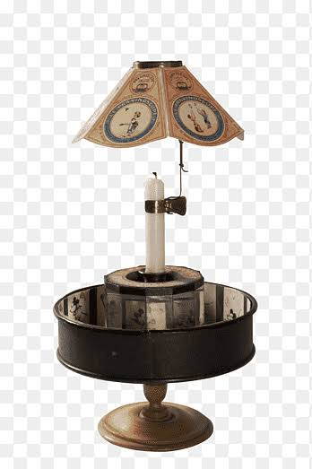
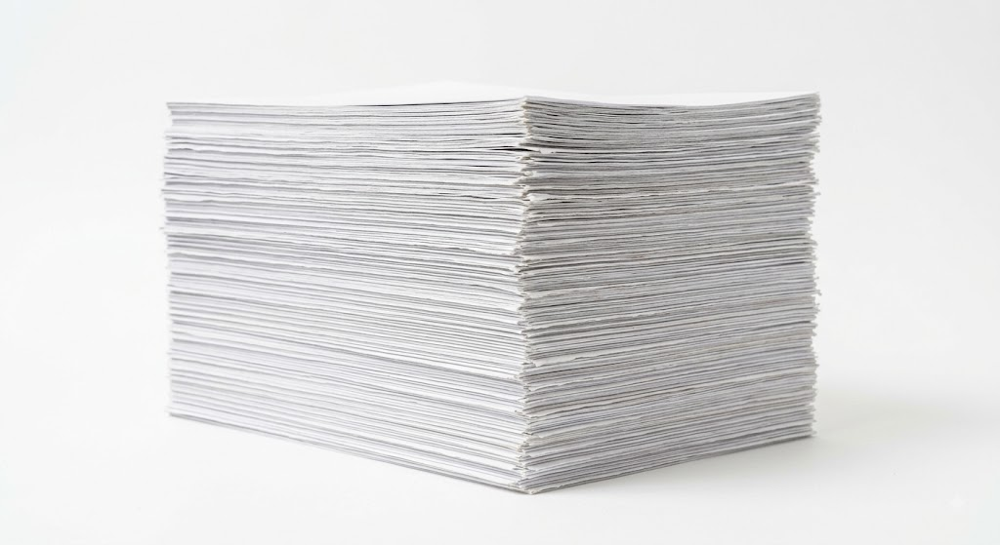
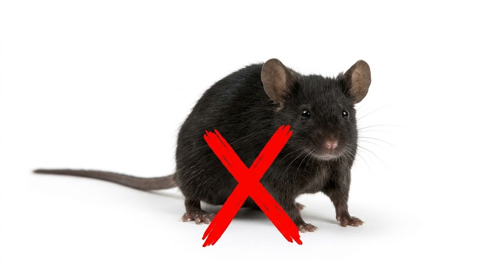
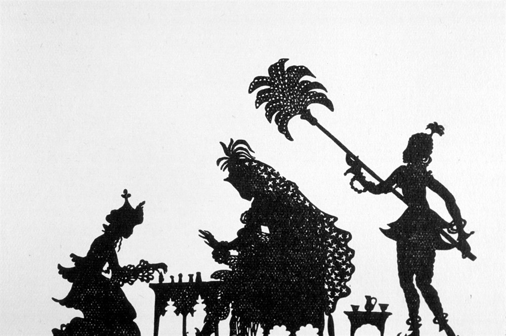

Meu primeiro post
Por: Emanoel de Assis Cochinski
Boas-vindas ao meu novo blog! Aqui vou compartilhar as mudanças e o avanço da técnica de animação na história.

Os primórdios
Por: Emanoel de Assis Cochinski
A técnica de animação começou no século XIX com brinquedos ópticos como o fenaquisticoscópio e o zoopraxiscópio, que simulavam movimento por meio de imagens sequenciais. O primeiro filme com projeção em série foi o Théâtre Optique de Émile Reynaud (1892), e o marco inicial do desenho em película foi Fantasmagorie (1908), de Émile Cohl.

As pilhas de papel
Por: Emanoel de Assis Cochinski
As animações antigas eram feitas totalmente à mão, quadro por quadro. Os artistas desenhavam milhares de folhas de papel com pequenas mudanças de posição. Esses desenhos passavam para lâminas transparentes de acetato (cels), eram pintados um a um e fotografados em sequência sobre um fundo fixo para criar a ilusão de movimento.
Bebês na produção
Por: Emanoel de Assis Cochinski
Nos créditos de filmes da Pixar, aparece uma lista chamada "Production Babies" com o nome dos filhos dos funcionários que nasceram durante aqueles longas anos de trabalho

Não foi a Disney
Por: Emanoel de Assis Cochinski
Não foi da Disney: O primeiro longa de animação do mundo foi El Apóstol (1917), criado na Argentina por Quirino Cristiani. Infelizmente, a única cópia foi destruída em um incêndio.

Silhuetas de Papel
Por: Emanoel de Assis Cochinski
O segundo longa sobrevivente mais antigo é As Aventuras do Príncipe Achmed (1926), uma obra alemã feita com recortes de papelão e sombras
Fontes: Google Gemini